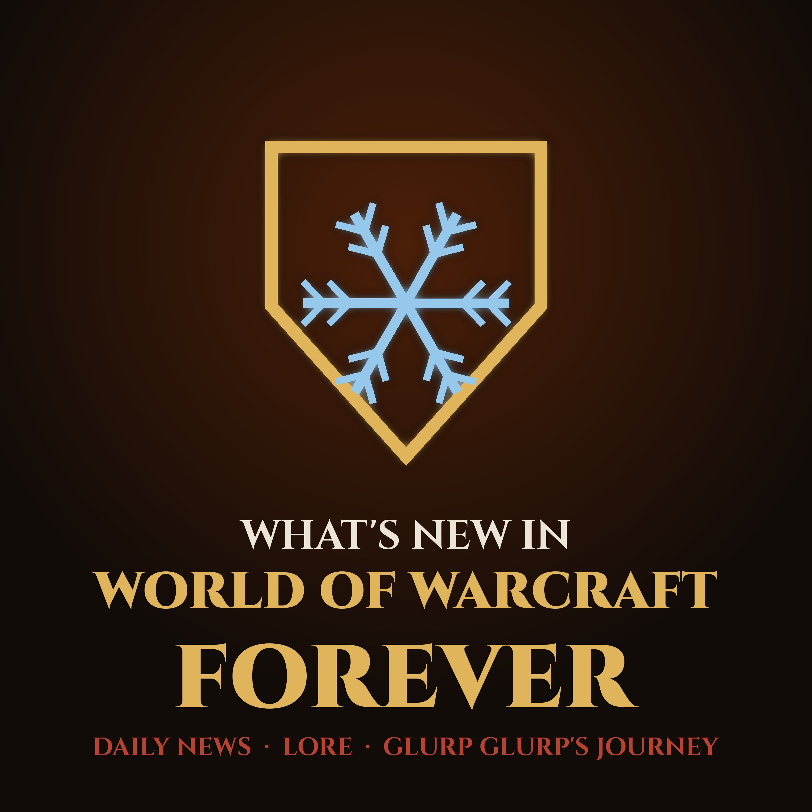
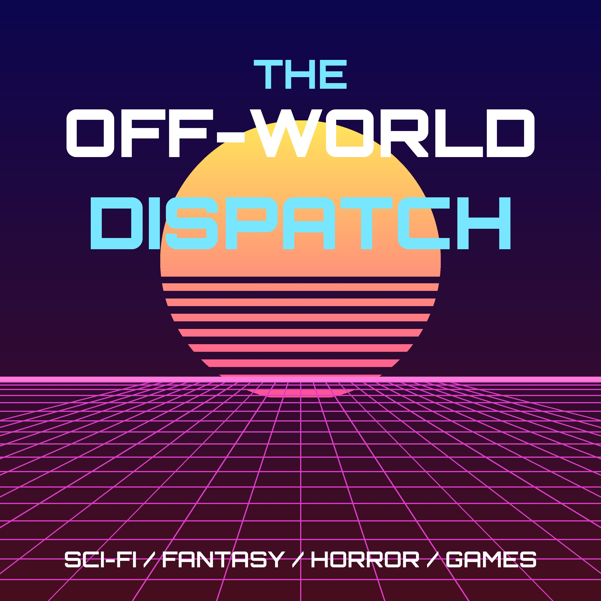

Pip & Alder Podcasts
▶ Open Pip & Alder Radio (every episode, one app)
In Apple Podcasts: Library, tap ••• then Follow a Show by URL, and paste a feed address.

What's New in World of Warcraft: Forever
Open in Apple Podcasts
https://marcelogarciahenrywinkler.github.io/pip-and-alder-podcasts/wow-forever/feed.xmlOpen in Apple Podcasts

The Off-World Dispatch
Open in Apple Podcasts
https://marcelogarciahenrywinkler.github.io/pip-and-alder-podcasts/off-world/feed.xmlOpen in Apple Podcasts
Alder and Pip are original AI-voiced characters.